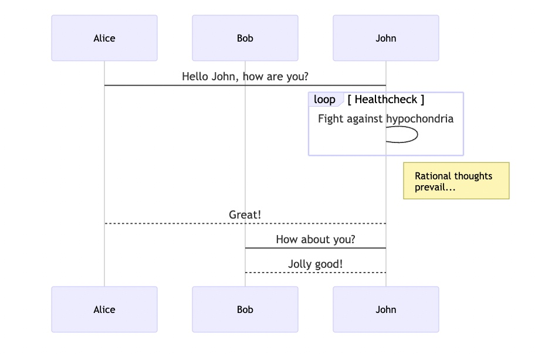
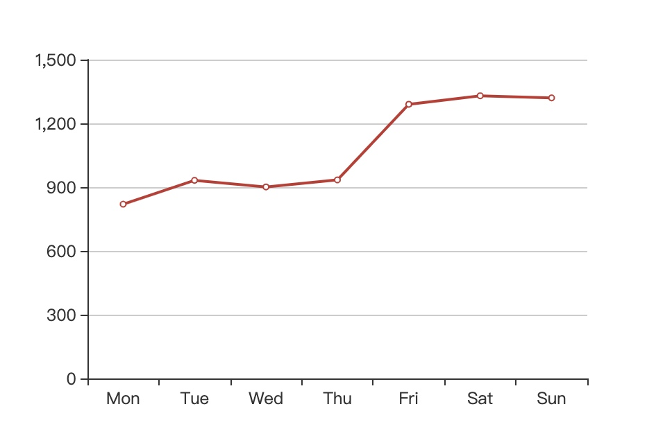

Markdown's design philosophy
The following is a description referring to the Markdown syntax guide full version, which explains very clearly what Markdown is , what is it used for.
Markdown is intended to be as easy-to-read and easy-to-write as is feasible.
Readability, however, is emphasized above all else. A Markdown-formatted document should be publishable as-is, as plain text, without looking like it's been marked up with tags or formatting instructions.
Markdown's syntax is intended for one purpose: to be used as a format for writing for the web.
Here are two more important points:
- First of all, Markdown is plain text. It does not come with any images and other attachments. Images and attachments are all quoted and stored outside the Markdown text. Therefore, the editor of MWeb will display the text completely without any deletion. For the convenience of viewing, the editor will display the images referenced by the image syntax, but the Markdown itself is plain text without any formatting and styles.
- In addition, the goal of Markdown is to be "easy to read and write", not to look good in typesetting. It is mainly for the convenience of entering text, that is to say, in order to achieve "easy to write", it is recommended not to think too much about typesetting when writing, but only consider what grammar to use, such as headings, lists, quotes or code blocks. Markdown is not good at complex typesetting, because of complex typesetting, Markdown is recommended to write HTML directly.
Understanding these two points will help you understand the design philosophy of the software MWeb, so you can use MWeb more happily, after all, MWeb is built around Markdown. It is also helpful to understand what MWeb can and cannot do, and why there is no software A's feature or software B's way. If you have time, it is also recommended to read the article Markdown syntax guide full version.
Learn Markdown syntax
MWeb 4 uses the CommonMark standard and the syntax of GitHub Flavored Markdown (GFM). If you want to get started quickly, you only need to learn it briefly. The learning process can be divided into three steps:
- Getting started: Currently the best place to learn is: https://commonmark.org/help/ , you can get started with 10 minutes of learning.
- Further study: Mainly to learn the extended grammar of GFM, mainly including strikethroughs, task lists, tables and footnotes. For details, you can check the GFM grammar extensions in this article.
- Special in MWeb: Unique in MWeb are TOC, LaTeX, drawing support (mermaid, echarts) and setting image width, which will also be explained later in this article.
The syntax of Markdown is actually very simple. Generally, you only need to understand what syntax is there, such as headings, lists, quotes, code blocks, and so on. If you don't know the details of the grammar, you can directly use the editor of MWeb to insert the relevant grammar. It can also be combined with the editor of MWeb, while learning and using, it is recommended to read the article MWeb editor introduction.
In addition, when writing Markdown documents, the blank lines is very important. Blank lines help to clearly distinguish the structure and content of the document and increase the readability of the text. In this way, when reading Markdown documents, there is no need to parse them into HTML. In general, it is recommended to leave a blank line between block elements in Markdown.
GitHub Flavored Markdown (GFM) syntax extensions
On the basis of CommonMark, Github extends some common grammars, mainly including strikethroughs, task lists, tables and footnotes. The following is a brief introduction to these grammars.
Strikethrough
Example:
(like ~~this~~)
Result:
Any word wrapped with two tildes (like this) will appear crossed out.
Task lists
Example:
- [ ] task one not finish `- + SPACE + [ ]`
- [x] task two finished `- + SPACE + [x]`
Result:
- task one not finish
- + SPACE + [ ] - task two finished
- + SPACE + [x]
Tables
Example:
First Header | Second Header
------------ | -------------
Content from cell 1 | Content from cell 2
Content in the first column | Content in the second column
You can create tables by assembling a list of words and dividing them with hyphens - (for the first row), and then separating each column with a pipe |:
Result:
| First Header | Second Header |
|---|---|
| Content from cell 1 | Content from cell 2 |
| Content in the first column | Content in the second column |
Footnote
Example:
This is a footnote:[^sample_footnote]
Result:
This is a footnote:1
MWeb-specific syntax
Image Width
Markdown syntax for image:

Format: 
In MWeb, you can use -w + Number to control image width, for example, set the image width 140px:

MWeb Drawing
mermaid
Mermaid is a popular js graphics library. It supports flowcharts, sequence diagrams and Gantt charts. Its official website is: https://mermaidjs.github.io/. The syntax for using mermaid in MWeb is to declare code blocks. The language is mermaid, and the mermaid drawing syntax can be written in the code block. You can copy the following syntax into MWeb to view the result.
```mermaid
sequenceDiagram
participant Alice
participant Bob
Alice->John: Hello John, how are you?
loop Healthcheck
John->John: Fight against hypochondria
end
Note right of John: Rational thoughts <br/>prevail...
John-->Alice: Great!
John->Bob: How about you?
Bob-->John: Jolly good!
```
Result：

echarts
Echarts is a js graph library of Baidu. Its website is https://echarts.apache.org/zh/index.html. It is very powerful. MWeb supports some basic usages of echarts. You can try the following syntax to copy it into MWeb. You can also go to the https://echarts.apache.org/examples/zh/index.html URL to see some examples. Note that MWeb can only parse option = {} which is simple but should be enough used.
```echarts
option = {
xAxis: {
type: 'category',
data: ['Mon', 'Tue', 'Wed', 'Thu', 'Fri', 'Sat', 'Sun']
},
yAxis: {
type: 'value'
},
series: [{
data: [820, 932, 901, 934, 1290, 1330, 1320],
type: 'line'
}]
};
```
Result：

LaTeX (MathJax rendering)
MWeb uses the native code block syntax in CommonMark to support LaTeX math formulas. The syntax of inline code and code blocks in CommonMark is highly extensible and can be extended at will. MWeb uses ``inline math`` as the inline syntax for math formulas and ```math block math ``` as the block syntax for math formulas. Then `code` is still inline code syntax, and ``inline math`` is also inline code in CommonMark, but will be rendered as math formula in MWeb. The advantage of this is that when the original markdown document is published to an environment that does not support mathematical formulas, it will be displayed in code, so that the original formula text will be displayed and will not affect reading too much.
In addition, MWeb is also compatible with $ and $$ style math formulas. When using math formulas, you need to enable LaTeX math formulas in `Preferences - General' and select the syntax to use.
Comments and read more
Actions->Insert Read More Comment or Command + .
Note The feature of reading more is only used when generating a website or blog. When inserting, pay attention to a blank line.
TOC
Markdown syntax:
[TOC]
Result:
-
footnote text detail... ↩